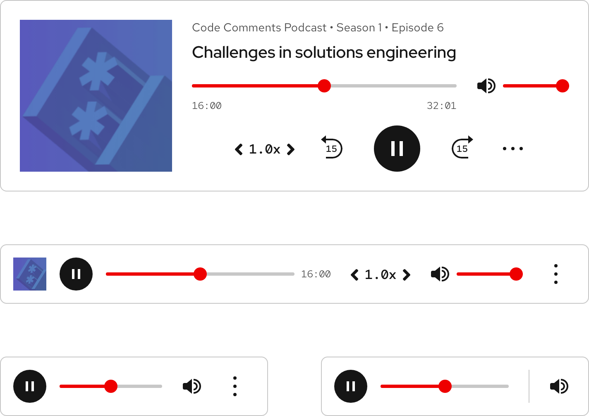

HomeAbout
About the Design System
RoadmapGet started
Overview
Designers
DevelopersFoundations
Overview
Color
Grid
Iconography
Spacing
TypographyTokens
Overview
Global color
box shadow
Typography
border
opacity
space
length
Icon
Breakpoints
Media QueriesElements
All elements
Accordion
Alert
Announcement
Audio player
Avatar
Back to top
Badge
Blockquote
Breadcrumb
Button
Card
Chip
Code block
Call to action
Dialog
Disclosure
Footer
Health index
Icon
Jump links
Navigation (primary)
Navigation (secondary)
Pagination
Popover
Planned
Progress steps
Planned
Site status
Skip link
Spinner
Statistic
Subnavigation
Surface
Switch
Table
Tabs
Tag
Tile
Timestamp
Tooltip
Video embedTheming
Overview
Color Palettes
Customizing
DevelopersPatterns
All Patterns
Card
Tabs
Filter
Form
Link
Link with icon
Logo wall
Search bar
Skip navigation
Sticky banner
Sticky card
Tile
Video thumbnailPersonalization
All Personalization Patterns
AnnouncementAccessibility
Fundamentals
Accessibility tools
Assistive technologies
CI/CD
Content
Contributors
Design
Development
Manual testing
Resources
Screen readers
Design/code status
Release notes
Get support
OverviewStatusSample elementWhen to useStatus checklistOverviewStatusSample elementWhen to useStatus checklist
Overview
An audio player plays audio clips in the browser and includes other features.

Status
Sample element
Code Comments
Bringing Deep Learning to Enterprise Applications
About the episode
There are a lot of publicly available data sets out there. But when it
comes to specific enterprise use cases, you're not necessarily going to
able to find one to train your models. To realize the power of AI/ML in
enterprise environments, end users need an inference engine to run on
their hardware. Ryan Loney takes us through OpenVINO and Anomalib, open
toolkits from Intel that do precisely that. He looks specifically at
anomaly detection in use cases as varied as medical imaging and
manufacturing.
Want to learn more about Anomalib? Check out the research paper that
introduces the deep learning library.
Ryan Loney
Product manager, OpenVINO Developer Tools, Intel®
Subscribe
Subscribe here:
Transcript
Hi, I'm Burr Sutter. I'm a Red Hatter who spends a lot of time talking to technologists about technologies. We say this a lot at Red Hat. No single technology provider holds the key to
success, including us. And I would say the same thing about myself. I love to share ideas, so I thought it would be awesome to talk to some brilliant technologists at Red Hat Partners. This is
Code Comments, an original podcast from Red Hat.
I'm sure, like many of you here, you have been thinking about AI/ML, artificial intelligence and machine learning. I've been thinking about that for quite some time and I actually had the
opportunity to work on a few successful projects, here at Red Hat, using those technologies, actually enabling a data set, gathering a data set, working with a data scientist and data
engineering team, and then training a model and putting that model into production runtime environment. It was an exciting set of projects and you can see those on numerous YouTube videos that
have published out there before. But I want you to think about the problem space a little bit, because there are some interesting challenges about a AI/ML. One is simply just getting access to
the data, and while there are numerous publicly available data sets, when it comes to your specific enterprise use case, you might not be to find publicly available data.
In many cases you cannot, even for our applications that we created, we had to create our data set, capture our data set, explore the data set, and of course, train a model accordingly. And
we also found there's another challenge to be overcome in this a AI/ML world, and that is access to certain types of hardware. If you think about an enterprise environment and the creation of
an enterprise application specifically for a AI/ML, end users need an inference engine to run on their hardware. Hardware that's available to them, to be effective for their application. Let's
say an application like Computer Vision, one that can detect anomalies and medical imaging or maybe on a factory floor. As those things are whizzing by on the factory line there, looking at
them and trying to determine if there is an error or not.
Well, how do you actually make it run on your hardware, your accessible technology that you have today? Well, there's a solution for this as an open toolkit called OpenVINO. And you might be
thinking, "Hey, wait a minute, don't you need a GPU for AI inferencing, a GPU for artificial intelligence, machine learning? Well, not according to Ryan Loney, product manager of OpenVINO
Developer Tools at Intel.
I guess I'll start with trying to maybe dispel a myth. I think that CPUs are widely used for inference today. So if we look at the data center segment, about 70% of the AI inference is
happening on Intel Xeon, on our data center CPUs. And so you don't need a GPU especially for running inference. And that's part of the value of OpenVINO, is that we're taking models that may
have been trained on a GPU using deep learning frameworks like PyTorch or TensorFlow, and then optimizing them to run on Intel hardware.
Ryan joined me to discuss AI/ML in the enterprise across various industries and exploring numerous use cases. Let's talk a little bit about the origin story behind OpenVINO. Tell us more
about it and how it came to be and why it came out of Intel.
Definitely. We had the first release of OpenVINO, was back in 2018, so still relatively new. And at that time, we were focused on Computer Vision and pretty tightly coupled with OpenCV, which
is another open source library with origins at Intel. It had its first release back in 1999, so it's been around a little bit longer. And many of the software engineers and architects at Intel
that were involved with and contributing to OpenCV are working on OpenVINO. So you can think of OpenVINO as complimentary software to OpenCV and we're providing an engine for executing
inferences as part of a Computer Vision pipeline, or at least that's how we started.
But since 2018, we've started to move beyond just Computer Vision inference. So when I say Computer Vision inference, I mean image classification, object detection, segmentation, and now
we're moving into natural language processing. Things like speech synthesis, speech recognition, knowledge graphs, time series forecasting and other use cases that don't involve Computer
Vision and don't involve inference on pixels. Our latest release, the 2022.1 that came out earlier this year, that was the most significant update that we've had to OpenVINO, since we started
in 2018. And the major focus of that release was optimizing for use cases that go beyond Computer Vision.
And I like that concept that you just mentioned right there, Computer Vision, and you said that you extended those use cases and went beyond that. Could you give us some more concrete
examples of Computer Vision?
Sure. When you think about manufacturing, quality control in factories, everything from arc welding, defect detection to inspecting BMW cars on assembly lines, they're using cameras or
sensors to collect data and usually it's cameras collecting images like RGB images that you and I can see and looks like something taken from a camera or video camera. But also, things like
infrared or computerized tomography scans used in healthcare, X-ray, different types of images where we can draw bounding boxes around regions of interest and say, "This is a defect," or,
"This is not a defect." And also, "Is this worker wearing a safety hat or did they forget to put it on?" And so, you can take this and integrate it into a pipeline where you're triggering an
alert if somebody forgets to wear their safety mask, or if there's a defect in a product on an assembly line, you can just use cameras and OpenVINO and OpenCV running these on Intel hardware
and help to analyze.
And that's what a lot of the partners that we work with are doing, so these independent software vendors. And there's other use cases for things like retail. You think about going to a store
and using an automated checkout system. Sometimes people use those automated checkouts and they slide a few extra items into their bag that they don't scan and it's a huge loss for the retail
outlets that are providing this way to check out realtime shelf monitoring. We have a Vispera, one of our ISVs that helps keep store shelves stocked by just analyzing the cameras in the
stores, detecting when objects are missing from the shelves so that they can be restocked. We have Vistry, another ISV that works with quick service restaurants. When you think about
automating the process of, when do I drop the fries into the fryer so that they're warm when the car gets to the drive through window, there's quite a bit of industrial healthcare retail
examples that we can walk through.
And we should dig into some more of those, but I got to tell you, I have a personal experience in this category that I want to share with and you can tell me how silly you might think at this
point in time it is. We actually built a keynote demonstration for the Red Hat big stage back in 2015. And I really want to illustrate the concept of asset tracking. So we actually gave
everybody in the conference a little Bluetooth token with a little battery, a little watch battery, and a little Bluetooth emitter. And we basically tracked those things around the conference.
We basically put a raspberry pi in each of the meeting rooms and up in the lunch room and you could see how the tokens moved from room to room to room.
It was a relatively simple application, but it occurred to me, after we figured out how to do that with Bluetooth and triangulating Bluetooth signals by looking at relative signal strength
from one radio to another and putting that through an Apache Spark application at the time, we then realized, "You know what? This is easier done with cameras." And just simply looking at a
camera and having some form of a AI/ML model, a machine learning model, that would say, "There are people here now," or, "There are no people here now." What do you think about that?
What you just described is exactly the product that Pathr, one of our partners is offering, but they're doing it with Computer Vision and cameras. So when Pathr tries to help retail stores
analyze the foot traffic and understand, with heat maps, where are people spending the most time in stores, how many people are coming in, what size groups are coming into the store and trying
to help understand if there was a successful transaction from the people who entered the store and left the store, to help with the retail analytics and marketing sales and positioning of
products. And so, they're doing that in a way that also protects privacy. And that's something that's really important. So when you talked about those Bluetooth beacons, probably if everyone
who walked into a grocery store was asked to put a tracking device in their cart or on their person and say, "You're going to be tracked around the store," they probably wouldn't want to do
that.
The way that you can do this with cameras, is you can detect people as they enter and remove their face. So you can ignore any biometric information and just track the person based on pixels
that are present in the detected region of interest. So they're able to analyze... Say a family walks in the door and they can group those people together with object detection and then they
can track their movement throughout the store without keeping track of their face, or any biometric, or any personal identifiable information, to avoid things like bias and to make sure that
they're protecting the privacy of the shoppers in the store, while still getting that really useful marketing analytics data. So that they can make better decisions about where to place their
products. That's one really good example of how Computer Vision, AI with OpenVINO is being used today.
And that is a great example, because you're definitely spot on. It is invasive when you hand someone a Bluetooth device and say, "Please, keep this with you as you go throughout our store,
our mall or throughout our hospital, wherever you might be." Now you mentioned another example earlier in the conversation which was related to worker safety. "Are they wearing a helmet?" I
want to talk more about that concept in a real industrial setting, a manufacturing setting, where there might be a factory floor and there's certain requirements. Or better yet there's like a
quality assurance requirement, let's say, when it comes to looking at a factory line. I've run that use case often with some of our customers. Can you talk more about those kinds of use cases?
One of our partners, Robotron, we published a case study, I think last year, where they were working with BMW at one of their factories. And they do quality control inspection, but they're
also doing things related to worker safety and analyzing. I use the safety hat example. There's a number of our ISVs and partners who have similar use cases and it comes down to, there's a few
reasons that are motivating this and some are related to insurance. It's important to make sure that if you want to have your factory insured, that your workers are protecting themselves and
wearing the gear regulatory compliance, you're being asked to properly protect from exposure to chemicals or potentially having something fall and hit someone on the head. So wearing a safety
vest, wearing goggles, wearing a helmet, these are things that you need to do inside the factory and you can really easily automate and detect and sometimes without bias.
I think that's one of the interesting things about the Robotron-BMW example is that they were also blurring, blacking out, so drawing a box to cover the face of the workers in the factory, so
that somebody who was analyzing the video footage and getting the alerts saying that, "Bay 21 has a worker without a hat on," that it's not sending their face and in the alert and potentially
invading or going against privacy laws or just the ethics of the company. They don't want to introduce bias or have people targeted because it's much better to blur the face and alert and have
somebody take care of it on the floor. And then, if you ever need to audit that information later, they have a way to do it where people who need to be able to see who the employee was and
look up their personal information, they can do that.
But then just for the purposes of maintaining safety, they don't need to have access to that personal information, or biometric information. Because that's one thing that when you hear about
Computer Vision or person tracking, object detection, there's a lot of concern, and rightfully so, about privacy being invaded and about tracking information, face re-identification,
identifying people who may have committed crimes through video footage. And that's just not something that a lot of companies want to... They want to protect privacy and they don't want to be
in a situation where they might be violating someone's rights.
Well, privacy is certainly opening up Pandora's box. There's a lot to be explored in that area, especially in a digital world that we now live in. But for now, let's move on and explore a
different area. I'm interested in how machines and computers offer advantages specifically in certain use cases like a quality control scenario. I asked Ryan to explain how a AI/ML and
specifically machines, computers, could augment that capability.
I can give a specific example where we have a partner that's doing defect detection, looking for anomalies in batteries. I'm sure you've heard there's a lot of interest right now in electric
vehicles, a lot of batteries being produced. And so, if you go into one of these factories, they have images that they collect of every battery that's going through this assembly line. And
through these images, people can look and see and visually inspect what their eyes and say, "This battery has a defect, send it back." And that's one step in the quality control process,
there's other steps I'm sure, like running diagnostic tests and measuring voltage and doing other types of non-visual inspection. But for the visual inspection piece, where you can really
easily identify some problems, it's much more efficient to introduce Computer Vision. And so, that's where we have this new library that we've introduced, called Anomalib.
So OpenVINO, while we're focused on inference, we're also thinking about the pipeline, or the funnel, that gets these models to OpenVINO. And so, we've invested in this anomaly segmentation,
anomaly detection library that we've recently open sourced and there's a great research paper about it, about Anomalib, but the idea is you can take just a few images and train a model and
start detecting these defects. And so, for this battery example, that's a more advanced example, but to make it simpler, take some bolts and... Take 10 bolts. You have one that has a scratch
on it, or one that is chipped, or has some damage to it, and you can easily get started in training to recognize the bolts that do not have an anomaly and the ones that do, which is a small
data set. And I think that's really one of the most important things today.
Challenges, one is access to data, but the other is needing a massive amount of data to do something meaningful. And so we're starting to try to change that dynamic with Anomalib. You may not
need a 100,000 images, you may need 100 images and you can start detecting anomalies in everything from batteries to bolts to, maybe even the wood varnish use case that you mentioned.
That is a very key point because often in that data scientist process, that data engineering data scientist process, the one key thing is, can you gather the data that you need for the input
for the model training? And we've often said, at least people I've worked with over the last couple years, "You need a lot of data, you need tens of thousands of correct images, so we can sort
out the difference between dogs versus cats," let's say. Or you need dozens and dozens of situations where if it's a natural language processing scenario, a good customer interaction, a good
customer conversation. And this case it sounds like what you're saying is, "Show us just the bad things, fewer images, fewer incorrect things, and then let us look for those kind of
anomalies." Can you tell us more about that? Because that is very interesting. The concept that I can use a much smaller data set as my input, as opposed to gathering terabytes of data in some
cases, to just simply get my model training underway.
Like you described, the idea is, if you have some good images and then you have some of the known defects, and you can just label, "Here's a set of good images and here's a few of the
defects." And you can right away start detecting those specific defects that you've identified. And then, also be able to determine when it doesn't match the expected appearance of a non
defective item. So if I have the undamaged screw and then I introduce one with some new anomaly that's never been seen before, I can say this one is not a valid screw. And so, that's the
approach that we're taking and it's really important because so often you need to have subject matter experts. Take the battery example, there's these workers who are on the floor, in a
factory and they're the ones who know best when they look at these images, which one's going to have an issue, which one's defective.
And then they also need to take that subject matter expertise and then use it to annotate data sets. And when you have these tens of thousands of images you need to annotate, it's asking
those people to stop working on the factory floor so they can come annotate some images. That's a tough business call to make, right? But if you only need them to annotate a handful of images,
it's a much easier ask to get the ball rolling and demonstrate value. And maybe over time you will want to annotate more and more images because you'll get even better accuracy in the model.
Even better, even if it's just small incremental improvements, that's something that if it generates value for the business, it's something the business will invest in over time. But you have
to convince the decision makers that it's worth the time of these subject matter experts to stop what they're doing and go and label some images of the things that they're working on in the
factory.
And that labeling process can be very labor intensive. If the annotation is basically saying what is correct, what's wrong, what is this, what is that. And therefore if we can minimize that
timeframe to get the value quicker, then there's something that's useful for the business, useful for the organization, long before we necessarily go through a whole huge model training phase.
So we talked about labeling and how that is labor intensive activity, but I love the idea of helping the human. And helping the human most specifically not get bored. Basically if the human
is eyeballing a bunch of widgets flying by, over time they make mistakes, they get bored and they don't pay as close attention as they should. That's why the constant of AI/ML, and
specifically Computer Vision augmenting that capability and really helping the human identify anomalies faster, more quickly, maybe with greater accuracy, could be a big win. We focused on
manufacturing, but let's actually go into healthcare and learn how these tools can be used in that sector and that industry. Ryan talked me about how OpenVINO's run time can be incorporated
into medical imaging equipment with Intel processors embedded in CT, MRI and ultrasound machines. While these inferences, this AI/ML workload, can be operating and executing right there in the
same physical room as the patient.
We did a presentation with GE last year, I think they said there's at least 80 countries that have their x-ray machines deployed. And they're doing things like helping doctors place breathing
tubes in patients. So during COVID, during the pandemic, that was a really important tool to help with nurses and doctors who were intubating patients, sometimes in a parking lot or a hallway
of a hospital. And when they had a statistic that GE said, I think one out of four breathing tubes gets placed incorrectly when you're doing it outside the operating room. Because when you're
in an operating room it's much more controlled and there's someone who's an expert at placing the tubes, it's something you have more of a controlled environment. But when you're out, in a
parking lot, in a tent, when the hospital's completely full and you're triaging patients with COVID, that's when they're more likely to make mistakes.And so, they had this endotracheal tube
placement, ETT, model that they trained and it helped to use an x-ray and give an alert and say, "This tube is placed wrong, pull it out and do it again." And so, things like that help doctors
so that they can avoid mistakes. And having a breathing tube placed incorrectly can cause collapsed lung and a number of other unwanted side effects. So it's really important to do it
correctly. Another example is Samsung Medison. They actually are estimating fetal angle of progression. So this is analyzing ultrasound of pregnant women being able to help take measurements
that are usually hard to calculate, but it can be done in an automated way. They're already taking an ultrasound scan and now they're executing this model that can take some of these
measurements to help the doctor avoid potentially more intrusive alternative methods. So the patient wins, it makes their life better and the doctor is getting help from this AI model. And
those are just a few examples.
Those are some amazing examples when it comes to all these things, we're talking CT scans and x-rays, other examples of Computer Vision. One thing that's kind of interesting in this space, I
think, whenever I get a chance to work on, let's say an object detection model, and one of our workshops, by the way, is actually putting that out in front of people to say, "Look, you can use
your phone and it basically sends the image over to our OpenShift with our data science platform and then analyzes what you see." And even in my case, where I take a picture of my dog as an
example, it can't really decide, is it a dog or a cat? I have a very funny looking dog.
And so there's always a percentage outcome. In other words, "I think it's a dog, 52%." So I want to talk about that more. How important is it to get to that a hundred percent accuracy? How
important is it to really, depending on the use case, to allow for the gray area if you will, where it's an 80% accuracy or a 70% accuracy, and what are the trade offs there associated with
the application? Can you discuss that more?
Accuracy is definitely a touchy subject, because how you measure it makes a huge difference. I think what you were describing with the dog example, there's sort of a top five potential
classes that might maybe be identified. So let's say you're doing object detection and you detect a region of interest, and it says 65% confidence this is a dog. Well, the next potential label
that could be maybe 50% confidence or 20% confidence might be something similar to a dog. Or in the case of models that have been trained on the ImageNet dataset or on COCO dataset, they have
actual breeds of dogs. If I want to look at the top five labels for a dog, for my dog for example, she's a mix, mostly a Labrador retriever, but I may look at the top five labels and it may
say 65% confidence that she's a flat coated retriever.
And then confidence that she's a husky as 20%, and then 5% confidence that she's a greyhound or something. Those labels, all of them are dogs. So if I'm just trying to figure out, is this a
dog? I could probably find all of the classes within the data set and say, "Well, these all, class ID 65, 132, 92 and 158, all belong to a group of dogs." So if I want to just write an
application to tell me if this is a dog or not, I would probably use that to determine if it's a dog. But how you measure that as accuracy, well that's where it gets a little bit complicated.
Because if you're being really strict about the definition and you're trying to validate against the data set of labeled images, and I have specific dog breeds or some specific detail and it
doesn't match, well then, the accuracy's going to go down.
And that's especially important when we talk about things like compression and quantization, which historically, has been difficult to get adoption in some domains, like healthcare, where
even the hint of accuracy going down implies that we're not going to be able to help. In some small case, maybe if it's even half a percent of the time, we won't detect that that tube is
placed incorrectly or that that patient's lung has collapsed or something like that. And that's something that really prevents adoption of some of these methods that can really boost
performance, like quantization. But if you take that example of... Different from the dog example, and you think about segmentation of kidneys. If I'm doing kidney segmentation, which is
taking a CT scan and then trying to pick the pixels out of that scan that belong to a kidney, how I measure accuracy may be how many of those pixels I'm able to detect and how many did I miss?
Missing some of the pixels is maybe not a problem, depending on how you've built the application, because you still detect the kidney, and maybe you just need to apply padding around the
region of interest, so that you don't miss any of the actual kidney when you compress the model and when you quantize the model. But that requires a data scientist, an ML engineer, somebody to
really, they have to be able to go and apply that after the fact, after the inference happens, to make sure that you're not losing critical information. Because the next step from detecting
the kidney, may be detecting a tumor.
And so, maybe you can use the more optimized model to detect the kidney, but then you can use a slower model to detect the tumor. But that also requires somebody to architect and make that
decision or that trade off and say, "Well, I need to add padding," or, "I should only use the quantized model to detect the region of interest for the kidney." And then, use the model that
takes longer to do the inference just to find the tumor, which is going to be on a smaller size. The dimensions are going to be much smaller once we crop to the region of interest. But all of
those details, that's maybe not easy to explain in a few sentences and even the way I explained it is probably really confusing.
I do love that use case, like you mentioned, the cropping, even in one scenario that we worked on for another project, we specifically decided to pixelate the image that we had taken, because
we knew that we could get the outcome we wanted by even just using a smaller or having less resolution in our image. And therefore, as we transferred it from the mobile device, the edge
device, up into the cloud, we wanted that smaller image just for transfer purposes. And still, we could get the accuracy we needed by a lot of testing.
And one thing that's interesting about that, from my perspective, is, if you're doing image processing, sometimes it takes a while for this transaction to occur. I come from a traditional
application background, where I'm reading and writing things from a database, or a message broker, or moving data from one place to another. Those things happen sub-second normally, even with
great latency between your data centers, it's still sub-second in most cases. While a transaction like this one can actually take two seconds or four seconds, as it's doing its analysis and
actually coming back with its, "I think it's a dog, I think it's a kidney, I think it's whatever." And providing me that accuracy statement. That concept of optimization is very important in
the overall application architecture. Would you agree with that or how do you think about that concept?
Definitely. It depends too on the use case. So if you think about how important it is to reduce the latency and increase the number of frames per second that you can process when you're
talking about a loss prevention model that's running at a grocery store. You want to keep the lines moving, you don't want every person who's at the self checkout to have to wait five seconds
for every item they scan. You need it to happen as quickly as possible. And if sometimes the accuracy decreases slightly, or I'd say the accuracy of the whole pipeline, so not just looking at
the individual model or the individual inference, but let's say that the whole pipeline is not as successful at detecting when somebody steals one item from the self checkout, it's not going
to be a life threatening situation. Whereas being hooked up to the x-ray machine with the tube placement model, they might be willing to have the doctor or the nurse wait five seconds to get
the result.
They don't need it to happen in 500 milliseconds. Their threshold for waiting is a little bit higher. That, I think, also drives some of the decision. You want to keep people moving through
the checkout line and you can afford to, potentially, if you lose a little bit of accuracy here and there, it's not going to cost the company that much money or it's not going to be life
threatening. It's going to be worth the trade off of keeping the line moving and not having people leave the store and not check out at all, to say, "I'm not going to shop today because the
line's too long."
There are so many trade-offs in enterprise AI/ML use cases, things like latency, accuracy and availability, and certainly complexities abound, especially in an obviously ever-evolving
technological landscape where we are still very early in the adoption of AI/ML. And to navigate that complexity, that direct feedback from real world end users is essential to Ryan and his
team at Intel. What would you say are some of the big hurdles or big outcomes, big opportunities in that space? And do you agree that we're still at the very beginning, in our infancy if you
will, of adopting these technologies and discovering what they can do for us?
Yeah, I think we're definitely in the infancy and I think that what we've seen is, our customers are evolving and the people who are deploying on Intel hardware, they're trying to run more
complicated models. They're the models that are doing object detection or detecting defects and doing segmentation. In the past you could say, "Here's a generic model that will do face
detection, or person detection, or vehicle detection, license plate detection." And those are general purpose models that you can just grab off the shelf and use them. But now we're moving
into the Anomalib scenarios, where I've got my own data and I'm trying to do something very specific and I'm the only one that has access to this data. You don't have that public data set that
you can go download that's under Creative Commons license for car batteries. It's just not something that's available.
And so, those use cases, the challenge with training those models and getting them optimized is the beginning of the pipeline. It's the data. You have to get the data, you have to annotate it
and the tools have to exist for you to do that. And that's part of the problem that we're trying to help solve. And then, the models are getting more complex. So if you think, just from
working with customers recently, they're no longer just trying to do image classification, "Is it a dog or a cat?" They've moved on to 3D point clouds and 3D segmentation models and things
that are like the speech synthesis example. These GPT models that are generating... You put a text input and it generates an image for you. It's just becoming much more advanced, much more
sophisticated and on larger images.
And so things like running super resolution and enhancing images, upscaling images, instead of just trying to take that 200 by 200 pixel image and classifying if it's a cat, now we're talking
about gigantic, huge images that we're processing and that all requires more resources or more optimized models. And every Computer Vision conference or AI conference, there's a new latest and
greatest architecture, there's new research paper, and things are getting adopted much faster. The lead time for a NeurIPS paper, CVPR, for a company to actually adopt and put those into
production, the time shortens every year.
Well Ryan, I got to tell you, I could talk to you, literally, all day about these topics, the various use cases, the various ways models are being optimized, how to put models into a pipeline
for average enterprise applications. I've enjoyed learning about OpenVINO and Anomalib. I'm fascinated by this, because I'll have a chance to go try this myself, taking advantage of Red Hat
OpenShift and taking advantage of our data science platform. On top of that, I will definitely go be poking at this myself. Thank you so much for your time today.
Thanks, Burr. This was a lot of fun. Thanks for having me.
You can check out the full transcript of our conversation and more resources, like a link to a white paper on OpenVINO and Anomalib at redhat.com/codecommentspodcast. This episode was
produced by Brent Simoneaux and Caroline Creaghead. Our sound designer is Christian Prohom. Our audio team includes Leigh Day, Stephanie Wonderlick, Mike Esser, Laura Barnes, Claire Allison,
Nick Burns, Aaron Williamson, Karen King, Boo Boo Howse, Rachel Ertel, Mike Compton, Ocean Matthews, Laura Walters, Alex Traboulsi, and Victoria Lawton. I'm your host, Burr Sutter. Thank you
for joining me today on Code Comments. I hope you enjoyed today's session and today's conversation, and I look forward to many more.
(permalink)